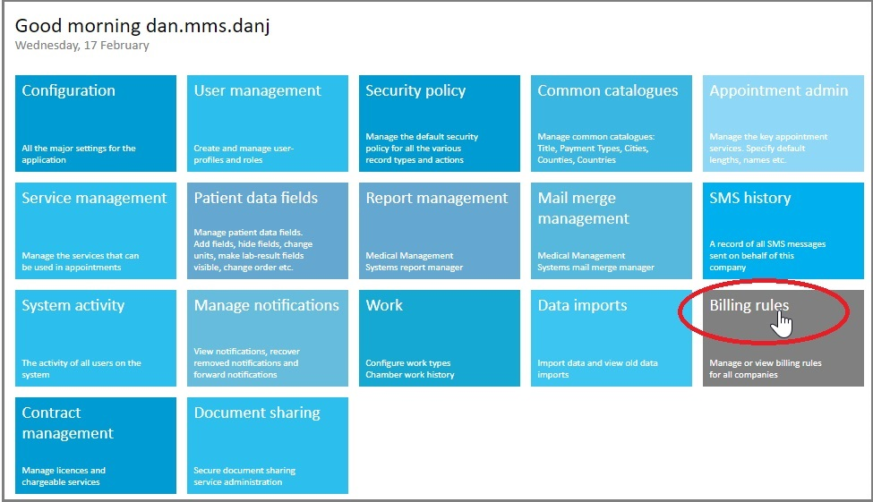
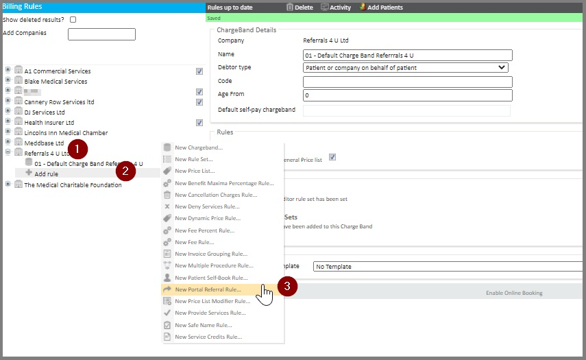
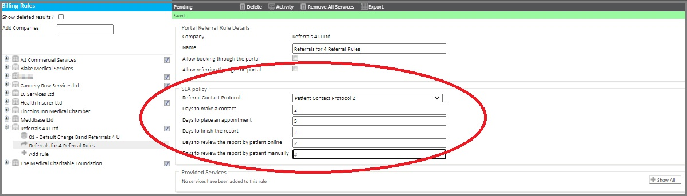
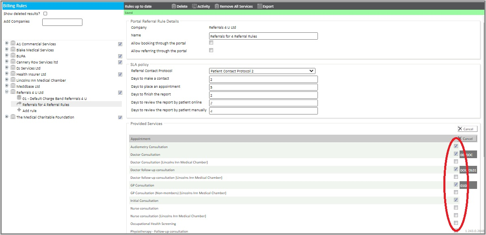
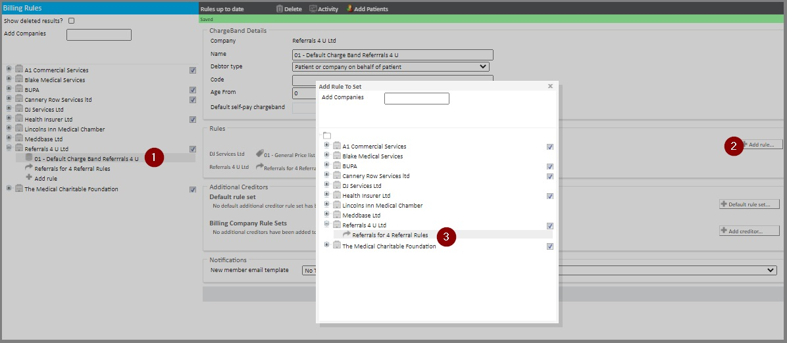
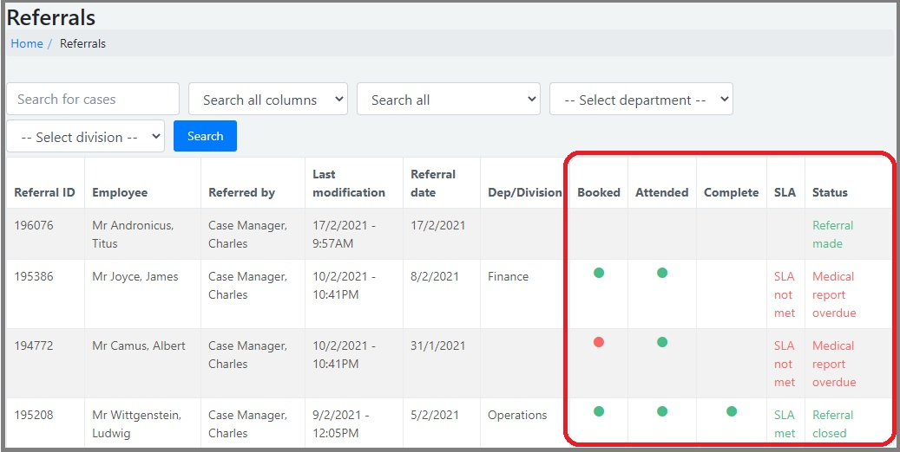
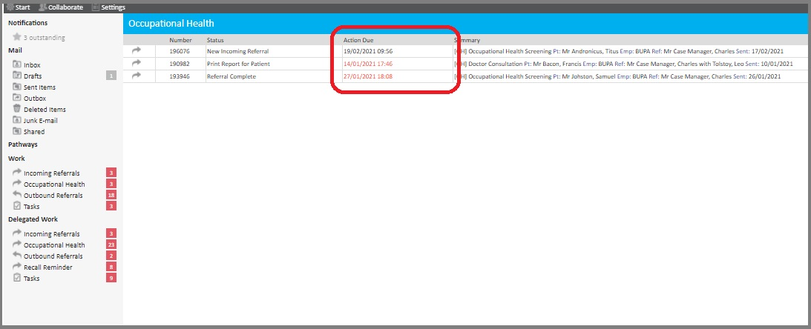
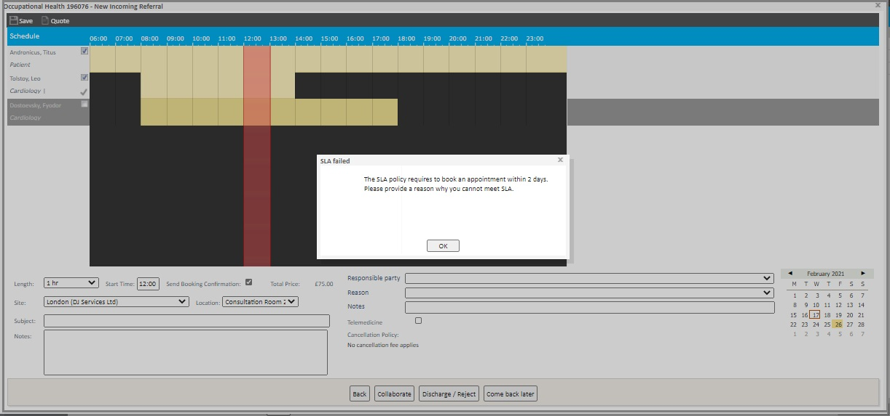

When Occupational Health Referrals are made, they often need to adhere to a Service Level Agreement with a particular employer.
This article outlines how you can set up an SLA Policy to manage SLAs.
It also outlines what this means in the context of reviewing and managing SLAs for referrals.
To do this from the Meddbase Start Page:

From here, an SLA Policy needs to be created as part of a Portal Referral Rule. So you need to:-
If the required company is not displayed in the list, you can use the Add Companies feature in the top-left of the screen to search for and select the required company.

The different fields in the SLA Policy panel are explained below.

At this point, you need to define the range of services that are covered by this SLA policy.
To do this:

When updated, the Portal Referral rule should be automatically saved.
As indicated above, the SLA Policy panel in the Portal Referral Rule has a range of field values with different characteristics. These are explained below.
Field | What it does |
Referral Contact Protocol
| Controls the suggested contact process for the recipient of the referral when any of the services are referred. |
Days to make a Contact
| The number of days from receiving the referral to making a booking before an SLA is failed for the listed services. |
Days to place an appointment | The number of days from making a booking to the appointment before an SLA is failed for the listed services. |
Days to finish the report | Number of days from the completion of the appointment to the sending of a report before an SLA is failed for the service. |
Days to review the report by patient online | Number of days available for the patient to review the report. Time is measured from the report being available to automatic release, less any non-working days or bank holidays. |
Days to review the report by patient manually | Number of days available for the patient to review the report when sent via a manual method. Time is measured from the report being available to automatic release; less any non-working days or bank holidays. (This can be over-ridden at the time of report completion). |
Provided Services | The list of services for which the SLA ad configuration options apply. |
Having created the Portal Referral Rule containing the SLA Policy, this now needs to be applied to Charge Band for the Employer.
To do this:

The rule is applied and available to this Charge Band.
For an employee who is referred for a Service covered by a specific SLA Policy, this has some key implications.


